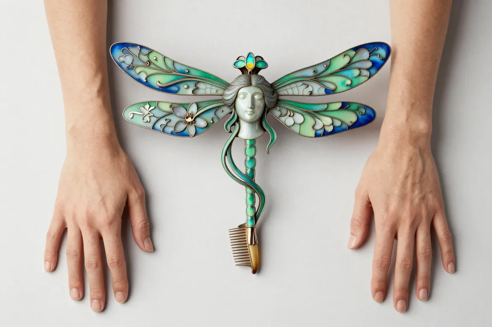

Ювелирные украшения ар-нуво
мода · 1895–1914 · также: Украшения югендстиля, Украшения в стиле Лалика, Украшения плика-жур
Украшения линии «удар бича». Женщины, насекомые, орхидеи и стрекозы в эмали, стекле, роге и опале. Рисунок значит больше, чем цена камней.

Главная идея
Украшение — произведение искусства: рисунок, эмаль и линия значат больше, чем стоимость бриллиантов.
Принципы дизайна
- Рисуйте вещь одной текучей асимметричной линией, идущей от стебля, волны или пряди волос.
- Берите сюжет из природы или женского тела: стрекозу, орхидею, мак, лебедя, голову с распущенными волосами.
- Наносите эмаль множеством тонких слоёв и берите плика-жур без задней пластины, чтобы свет проходил сквозь цвет.
- Смешивайте драгоценные и дешёвые материалы по виду: рог, стекло и опал рядом с золотом и бриллиантами.
- Держите бриллианты мелкими и используйте как точку света, а не как главную форму.
- Помещайте в центр вещи крупный опал, лунный камень или кусок резного стекла.
- Делайте каждую вещь единственной и подписывайте спереди или сзади.
- Вешайте подвеску на тонкую цепочку, чтобы вещь двигалась вместе с телом.
Антипаттерны
- Ряды равных камней в симметричной оправе
- Закрытый страз на фольге
- Тяжёлый чёрный траурный гагат
- Прямые геометрические линии 1920-х
- Крупные яркие бриллианты как главная форма
- Холодная белая платиновая ажурная работа
Палитра
Родословная
- Перекликается с
- Ар-нуво, Предмет в стиле ар-нуво
- Развился из
- Ювелирные украшения «Искусств и ремёсел»
- Вызвал реакцию
- Ювелирные украшения ар-деко, Украшения стиля «гирлянда»
- Бунт против
- Викторианские сентиментальные украшения
Использовать
SKILL.md · tokens.css · исходный JSON · открыть в демо